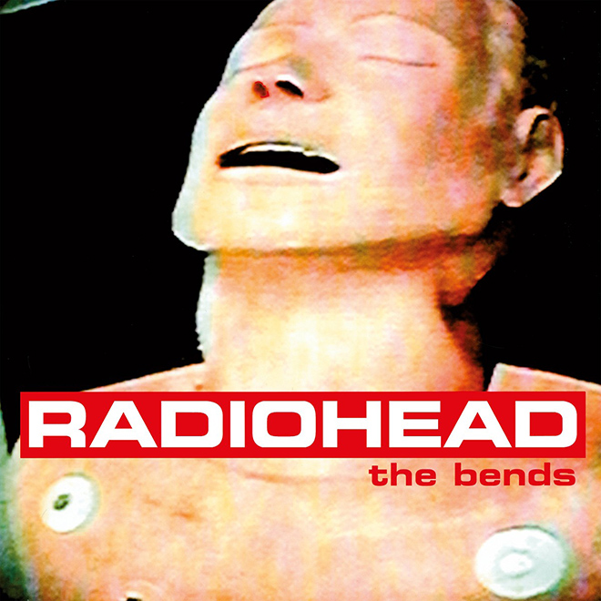
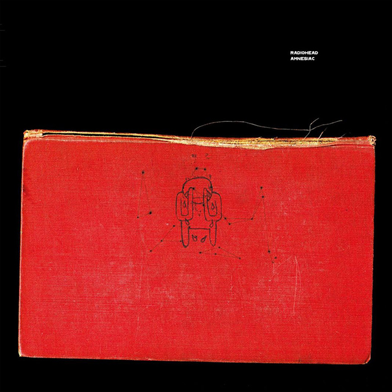

Disco |
Pablo Honey |
The Bends |
Ok Computer |
Kid A |
Amnesiac |
Hail to
the Thief |
In Rainbows |
The king
of limbs |
A moon
shaped pool |
Tapa |
 |
 |
 |
 |
 |
 |
 |
 |
 |
Fecha de
lanzamiento |
1993 |
1995 |
1997 |
2000 |
2001 |
2003 |
2007 |
2011 |
2016 |
Información
técnica |
- Publicación: 22/2/1993
- Grabación: Mayo - Noviembre, Inglaterra
- Género: Rock alternativo
- Duración: 42:11
- Discográfica: EMI, Parlophone
Capitol Records
- Productores: Sean Slade, Paul Q. Kolderie
|
- Publicación: 13/3/1995
- Grabación: Agosto - Noviembre 1994
- Género: Rock alternativo
- Duración: 48:38
- Discográfica: Parlophone
Capitol Records
- Productores: John Leckie,
Nigel Godrich
|
- Publicación: 21/5/1997
- Grabación: Julio 1996,
Inglaterra
- Género: Rock alternativo
- Duración: 53:27
- Discográfica: Parlophone
Capitol Records
- Productores: Radiohead,
Nigel Godrich
|
- Publicación: 2/10/2000
- Grabación: Enero 1999,
Abril 2000
- Género: Rock experimental
Música electrónica
Art rock
Ambient
Post rock
- Duración: 49:51
- Discográfica: EMI,
Parlophone
Capitol Records
- Productores: Radiohead,
Nigel Godrich
|
- Publicación: 5/6/2001
- Género: Rock experimental
Música electrónica
Art rock
- Duración: 43:57
- Discográfica: EMI,
Parlophone
Capitol Records
- Productores: Radiohead,
Nigel Godrich
|
- Publicación: 9/6/2003
- Grabación: Septiembre 2002,
Febrero 2003,
California
- Género: Rock electrónico
Música electrónica
Art rock
- Duración: 56:31
- Discográfica: Parlophone
Capitol Records
- Productores: Radiohead,
Nigel Godrich
|
- Publicación: 10/10/2007
- Grabación: Febrero 2005,
Junio 2007,
California
- Género: Rock experimental
Art rock
Art pop
Rock alternativo
- Duración: 42:34
- Discográfica: XL Recordings
TBD Records
BMG ATO Records
MapleMusic/Fontana
- Productores: Mark Stent,
Nigel Godrich
|
- Publicación: 18/2/2011
- Grabación: 2009 - 2011
- Género: Rock experimental
Música electrónica
- Duración: 37:24
- Discográfica: XL Recordings
Ticker Tape,
Hostess Entertainment
- Productores: Nigel Godrich
|
- Publicación: 8/5/2016
- Grabación: 2014 - 2016
- Género: Art rock, Chamber pop,
Art pop, Ambient
- Duración: 52:31
- Discográfica: XL Recordings
- Productores: Nigel Godrich
|
Integrantes |
- Thom Yorke
- Ed O'Brien
- Phil Selway
- Jonny Greenwood
- Colin Greenwood
|
- Thom Yorke
- Ed O'Brien
- Phil Selway
- Jonny Greenwood
- Colin Greenwood
|
- Thom Yorke
- Ed O'Brien
- Phil Selway
- Jonny Greenwood
- Colin Greenwood
|
- Thom Yorke
- Ed O'Brien
- Phil Selway
- Jonny Greenwood
- Colin Greenwood
|
- Thom Yorke
- Ed O'Brien
- Phil Selway
- Jonny Greenwood
- Colin Greenwood
|
- Thom Yorke
- Ed O'Brien
- Phil Selway
- Jonny Greenwood
- Colin Greenwood
|
- Thom Yorke
- Ed O'Brien
- Phil Selway
- Jonny Greenwood
- Colin Greenwood
|
- Thom Yorke
- Ed O'Brien
- Phil Selway
- Jonny Greenwood
- Colin Greenwood
|
- Thom Yorke
- Ed O'Brien
- Phil Selway
- Jonny Greenwood
- Colin Greenwood
|
Lista de
temas |
- You
- Creep
- How Do You?
- Stop Whispering
- Thinking About You
- Anyone Can Play Guitar
- Ripcord
- Vegetable
- Prove Yourself
- I Can't
- Lurgee
- Blow Out
|
- Planet Telex
- The Bends
- High & Dry
- Fake Plastic Trees
- Bones
- (Nice Dream)
- Just
- My Iron Lung
- Bullet Proof...I Wish I Was
- Black Star
- Sulk
- Street Spirit (Fade Out)
|
- Airbag
- Paranoid Android
- Subterranean Homesick Alien
- Exit Music (For a Film)
- Let Down
- Karma Police
- Fitter Happier
- Electioneering
- Climbing Up the Walls
- No Surprises
- Lucky
- The Tourist
|
- Everything in Its Right Place
- Kid A
- The National Anthem
- How To Disappear Completely
- Treefingers
- Optimistic
- In Limbo
- Idioteque
- Morning Bell
- Motion Picture Soundtrack
|
- Packt Like Sardines in a Crushd Tin Box
- Pyramid Song
- Pulk/Pull Revolving Doors
- You and Whose Army?
- I Might Be Wrong
- Knives Out
- Morning Bell/Amnesiac
- Dollars and Cents
- Hunting Bears
- Like Spinning Plates
- Life in a Glasshouse
|
- 2+2=5
- Sit Down. Stand Up
- Sail to the Moon
- Backdrifts
- Go to Sleep
- Where I End And You Begin
- We Suck Young Blood
- The Gloaming
- There There
- I Will
- A Punchup At A Wedding
- Myxomatosis
- Scatterbrain
- A Wolf At The Door
|
- 15 Step
- Bodysnatchers
- Nude
- Weird Fishes/Arpeggi
- All I Need
- Faust Arp
- Reckoner
- House of Cards
- Jigsaw Falling into Place
- Videotape
|
- Bloom
- Morning Mr Magpie
- Little by Little
- Feral
- Lotus Flower
- Codex
- Give Up the Ghost
- Separator
|
- Burn the Witch
- Daydreaming
- Decks Dark
- Desert Island Disk
- Ful Stop
- Glass Eyes
- Identikit
- The Numbers
- Present Tense
- Tinker Tailor Soldier Sailor Rich Man Poor Man Beggar Man Thief
- True Love Waits
|